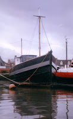
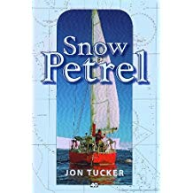
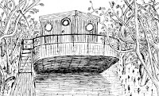
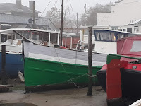
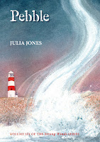
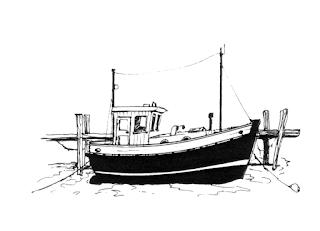

| Ben Tucker's Snow Petrel |
{kind=link}
Some readers took me at my word – and, to some extent, they
were right, I was in Antarctica, but
only in my imagination. My mind and body were elsewhere. Paragraph two began:
 |
| Goldenray 2015 |
{kind=link}
It is dark and damp in Suffolk and I
should be conserving my torch batteries. It’s four in the morning and I can
hear the tide running through the gap in the plank which I haven’t been able to
plug [...] All I need to do now is stay awake and keep checking. Everything has been swamped and soaked up to two and three feet in the cabin. The bunk where I’m lying slopes sideways because the big, empty fresh water tank underneath floated up in the earlier flood and has settled back down at an angle. It’s too heavy for me to move and anyway it’s not a priority. All that matters is that the pump should keep running for as long as the tide is up.
I was on board Goldenray, our hopelessly leaky former
fishing boat, where I’d arrived to find water up to the cabin bunks and none of
her pumps working. One more tide and she’d have sunk. Not far, admittedly
– Goldenray is moored in a muddy dock
in Woodbridge on the River Deben in Suffolk – but it would probably have necessitated a
salvage operation, with attendant expense and despair. I’d begged a wastewater
pump, stolen (I admit) an electricity supply and now I was waiting it out until
the tide went down again and morning light returned bringing a shipwright (I hoped). Meanwhile, I was reading.
{kind=link}

It was Jon Tucker’s brilliant writing in his book Snow Petrel that had transported me to Cape Denison and I wasn’t only loving the clear cold sunshine, the crowds of Adelie penguins and the fantastic achievement of the three Tuckers being there (Snow Petrel was the smallest yacht ever to reach Cape Denison and no other has succeeded in the twelve years since their voyage): I was also loving the fact that when things had got tough and there was nothing physical to be done, Tucker and his two sons read. When they were trapped in their cabin with a blizzard raging outside and all they could feel was Snow Petrel being pressed down by the weight of snow and ice, they took to their books. As Ben Tucker generously commented after the blogpost, "
Jon Tucker and I have become
friends, though we’re unlikely to meet. He and his wife Babs cruise the
Pacific in their ketch, New Zealand Maid, on board which they brought up their
five sons. Jon now writes eco-adventures for older children and I’ve just
enjoyed his most recent title, Those Sugar Barge Kids. One episode felt especially vivid. Jake, the young
hero, has been slow to fall asleep in his first night with new friends on board
an old sugar-barge in a mangrove-jungle in New Zealand’s Bay of Islands.
| Jon Tucker's new novel |
It is dark. The tide is high. The environment is muddy. It came as no surprise to notice that the fictional New Zealand sugar-barge had been christened ‘Goldenray’.
Equally it will
come as no surprise to friends as well as readers to discover that Tucker’s
young heroine, Ella, deals with the situation far more quickly and decisively than I
had done. She races to fetch a heavy, petrol-driven fire pump:
 |
| That sugar-barge |
{kind=link}
As Ella screwed
the cap back on and turned on the petrol valve, she sent Jake back down to
catch the suction hose. ‘Get Sam to show you where you can get it into the
bilge near the ladder. There’s another floor-hatch – she knows where it is.’
A moment later
Jake gave Ella a thumbs-up which was followed almost immediately by the roar of
a petrol engine. The heavy suction hose pulsated in his hands, and a small
whirlpool developed not far from where it disappeared into the murky water,
with a slurping noise that could just be heard over the noisy pump.
Oh, how I know and
love that slurping noise! Whether the whirlpool is spinning counter-clockwise (as
it may have done on New Zealand's ‘Goldenray’) or
clockwise as on Goldenray, it’s a
sight and sound to gladden the anxious heart. And even if the Coriolis effect doesn’t
always work exactly
as we learned in school, who cares? That unwanted water is on its Way Out. I will commend Jon Tucker's novel to you for its unexpurgated truth to nautical life (among its many other fine qualities).
There are however
problems with writing too directly from the events of daily boat-maintenance. Suffolk's Goldenray has (touch wood)
never subsequently sunk quite as low as she did on that terrible night. However I
cannot deny that she is not in mint condition and, were her various power
sources to fail, I have no hefty petrol-driven fire pump to heave into place as on fictional New Zealand's 'Goldenray'. Over the past couple of years various
well-respected figures around the Woodbridge waterfront -- people who I count as my esteemed friends -- have suggested that the
time has come to let the chain-saws have her. I understand that they have my best interests
at heart. "Think of the extra time you could devote to Peter Duck," says one master-tempter.
 |
| Goldenray, 2018 |
{kind=link}
I nevertheless indignantly resist their sensible suggestions
and over the course of this 2018 summer have spent many hours painting Goldenray in eye-catching colours to try to divert attention from her structural imperfections. When the Owl and the Pussy Cat went to sea in a beautiful pea-green boat did anyone have the audacity to check the condition of their underwater planking? I think not.
 |
| forthcoming... |
Ah-ha!, I know what I’ll do: I’ll move Goldenray further south and … wait for it, here’s my master stroke… I’ll change her name.
 |
| Welcome back, Lowestoft Lass! (from The Lion of Sole Bay) |
{kind=link}